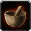

Maserote
dopant (macération) - 75 po
↪ plante - plaine - été
↪ plante - plaine - été
La maserote est une plante fragile aux fleurs rouge qu'on trouve principalement dans les plaines, car elle ne supporte pas les températures extrêmes, quelles qu'elles soient. Les druides expérimentés en sont particulièrement friands car elle aide à maintenir leur forme animale plus longtemps.
La macération de maserote augmente la durée sous laquelle un druide peut revêtir sa Forme sauvage de 1 heure, s'il a accès à cette capacité. L'effet secondaire provoqué par ce breuvage lorsque son effet prend fin est que les yeux du druide deviennent rouges de sang pendant 1 heure environ.
La macération de maserote augmente la durée sous laquelle un druide peut revêtir sa Forme sauvage de 1 heure, s'il a accès à cette capacité. L'effet secondaire provoqué par ce breuvage lorsque son effet prend fin est que les yeux du druide deviennent rouges de sang pendant 1 heure environ.
Illustration reproduite avec l'aimable autorisation de Christine Achard
Recueil des plantes d´AideDD